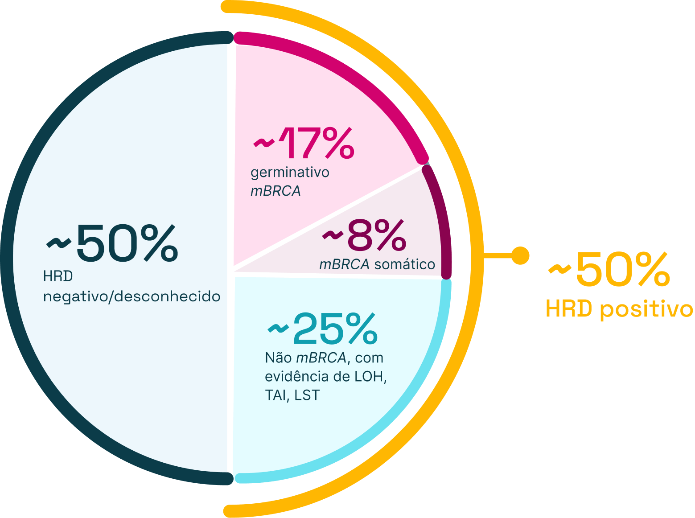

Explore conteúdos sobre biomarcadores e práticas de
testagem que apoiam a estratificação de risco,
definição
de prognóstico e decisões terapêuticas no câncer de
ovário epitelial avançado

Cerca de 50% dos carcinomas serosos de alto grau apresentam deficiência da recombinação homóloga (HRD).1 Dentro desse grupo, aproximadamente 25% apresentam alterações nos genes BRCA1 ou BRCA2, somáticas ou germinativas.2
Pacientes com carcinoma epitelial avançado de ovário devem passar por avaliação oncogenética.
É o que permite estruturar decisões terapêuticas mais precisas já na primeira linha.
Quer se aprofundar ainda mais?
Assista ao vídeo em que a Dra. Mariana Petaccia esclarece dúvidas e destaca a importância da testagem molecular de BRCA e HRD no diagnóstico do carcinoma epitelial de ovário.
Entre 15% e 17% das pacientes com câncer de ovário apresentam mutações germinativas em BRCA1 ou BRCA2,2 muitas vezes sem histórico familiar evidente. Identificar essas alterações transforma o cuidado porque:
Diretrizes da National Comprehensive Cancer Network, American Society of Clinical Oncology e Society of Gynecologic Oncology recomendam avaliação somática e germinativa universal no câncer epitelial de ovário avançado.4
Variáveis pré-analíticas como tempo prolongado de isquemia fria, fixação inadequada, baixa celularidade tumoral, necrose extensa podem comprometer sensibilidade e gerar resultados inconclusivos.
Amostras pós-quimioterapia neoadjuvante podem apresentar redução significativa da celularidade, alterações morfológicas induzidas pelo tratamento ou possível seleção clonal tumoral.6
A testagem no diagnóstico inicial tende a oferecer maior representatividade biológica do tumor.6 O patologista assume papel central ao integrar: morfologia, imunoistoquímica e testagem molecular reflexa.
Gostaria de conferir mais detalhes?
A testagem molecular deixou de ser apenas um exame complementar no carcinoma epitelial avançado de ovário. Hoje, ela estrutura o cuidado desde o diagnóstico.
Ao integrar a caracterização de HRD e mutações somáticas em BRCA1/BRCA2, o momento adequado da testagem tumoral e a qualidade da amostra, além da avaliação germinativa para identificar risco hereditário, é possível alinhar biologia tumoral, estratégia terapêutica e prevenção familiar em uma única linha de raciocínio clínico.
BRCA1: Breast Cancer Gene 1; BRCA2: Breast Cancer Gene 2 ; HRD: Homologous Recombination Deficiency (Deficiência de Recombinação Homóloga).
BR-47868 - Março/2026. Material destinado exclusivamente aos profissionais de saúde habilitados a prescrever ou dispensar medicamentos. Propriedade da AstraZeneca Brasil. Todos os direitos reservados.